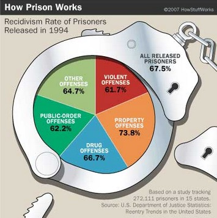

Wednesday
9-9:30: Group discussion: What’s up with this chart?

9:30-11: Data visualization: a theoretical introduction
11-12: Data viz theory: Visualization methods → role of each graphical format?
12-1: Working lunch/lab time
1-2: Data viz lab: How web languages work (with hands-on exercise)
2-3: Data viz lab: What libraries are and how to use highcharts
- What’s a library?
- Sample highchart files
3-4: Data viz lab: What libraries are and how to use highcharts (continued)